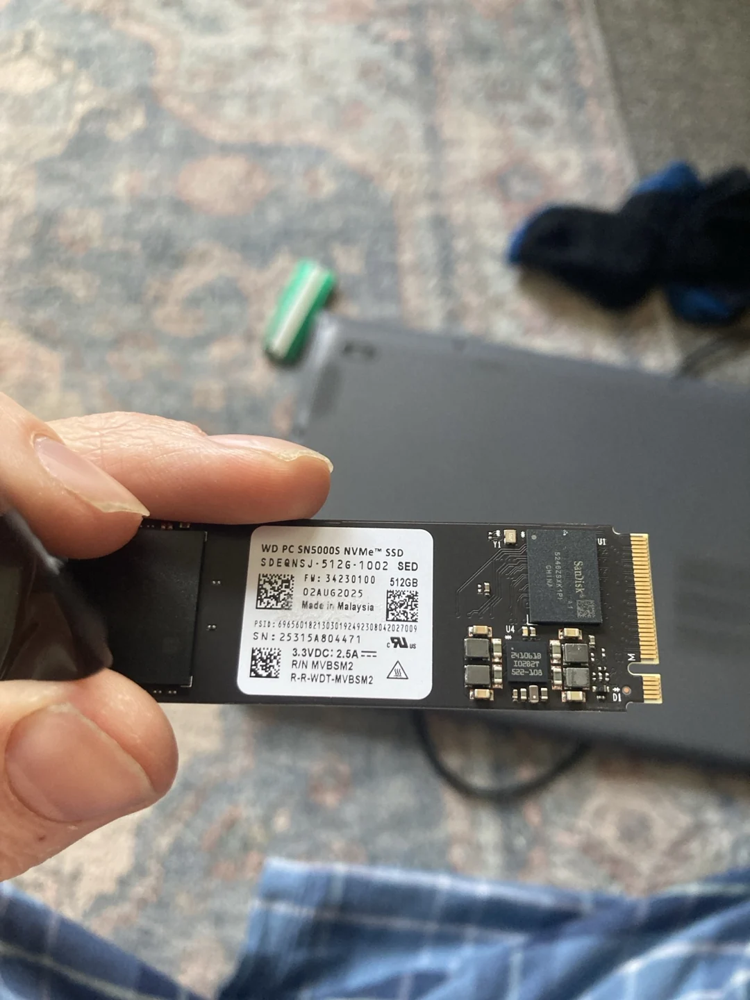

You do not need to memorise the terminal
I learnt more Linux by trying to make the tower useful than by reading a list of commands in isolation. Checking a mount, finding a log or asking why Jellyfin could not see a folder gave each command a purpose.
This guide starts with navigation, then moves into users, packages, drives and services. The examples suit Mint and other Debian/Ubuntu-based systems. Read what each command does before using it; a terminal is direct, so it will not always ask twice.
1. Find your bearings
whoami
pwd
ls -lahwhoami shows the current user. pwd shows your current directory. ls lists its contents: -l adds detail, -a includes hidden names, and -h makes file sizes easier to read.
cd ~/Documents
mkdir -p terminal-practice
cd terminal-practice
pwdMove into Documents, create a practice folder, enter it and confirm where you are. If your Documents directory has a different name, use that path. Tab completes names; the arrow keys recall previous commands.
2. Create, read and copy a file
printf 'My first terminal note\n' > note.txt
cat note.txt
cp -i note.txt note-copy.txt
ls -lhprintf writes a small note. The > redirect replaces the named output file, so use the practice filename. cat prints it, and cp -i asks before overwriting an existing copy.
less note.txt
man lsless lets you read without editing; q exits. man opens the installed manual for a command. Use Ctrl + C to interrupt a running command when appropriate.
3. Set a password and check its status
passwd
passwd -S "$USER"passwd changes your own password and prompts for the current and new values. Typing is deliberately invisible, including asterisks. The status command reports account information: P means a usable password, L locked and NP no password. It does not display or recover the password.
Your Linux login, a Samba share login and a Jellyfin user are different accounts. Changing one does not automatically change the others. Keep that distinction in mind when a network application rejects a password that works at the desktop.
4. Understand permissions before changing them
ls -ld ~/Documents
idThe directory listing shows permission bits and its owner/group. id shows your identity and group memberships. Read, write and execute have different meanings for files and directories; a directory needs execute permission to be traversed.
chmod u+x my-script.shFor a script you created and inspected, u+x grants its owner execute permission. Replace the filename with that script. Avoid copying recursive permissions commands across an entire home folder or media drive to solve one missing-access error.
5. Install software on Mint
sudo apt update
apt search smartmontools
sudo apt install smartmontoolsapt update refreshes the package list; it does not itself upgrade every installed application. Search first, then install the package you actually need. Mint’s graphical Software Manager and Update Manager remain good alternatives.
6. See which disks are really mounted
My tower has several drives with different filesystems and mount points. The order of names such as /dev/sda can change, so a label or UUID is usually more meaningful when you are matching a drive to a permanent mount.
lsblk -f
df -h
findmnt /mnt/moviesList block devices and filesystem identifiers, check used/free space, then inspect one example mount. Substitute your own mount point. These commands inspect the system; they do not format anything.

du -sh ~/Documents
sudo blkiddu -sh totals one directory. blkid shows filesystem identifiers. If you later edit /etc/fstab, keep a backup and follow a guide matching the filesystem; an incorrect entry can disrupt boot or access to a drive.
7. Check services and logs
systemctl status jellyfin --no-pager
journalctl -u jellyfin -b --no-pager -n 50Check the service, then read its latest 50 log entries from this boot. Some logs require administrator privileges. A log line helps narrow down a fault; it is not automatically a diagnosis.
sudo journalctl -k -b -1 | grep -Ei 'amdgpu|radeon|gpu|timeout|mce|hardware error'-k selects kernel messages, -b -1 selects the previous boot, and the pipe sends the output into a case-insensitive search. Previous-boot logs may be unavailable if the journal was not retained. This was the kind of check that exposed GPU-lockup messages during my troubleshooting.
8. Connect the desktop to the rest of the house
hostname -I
testparmThe first command lists local network addresses. testparm, provided by Samba, checks its configuration. On an iPhone or another compatible client, use smb://SERVER-IP with the server’s actual LAN address to reach a configured share.
sudo -u jellyfin ls "/mnt/cartoons"Run a read-only directory listing as the Jellyfin service user. This separates “my desktop can see it” from “the server account can read it”. It was a useful check on my own tower.
A few habits worth keeping
Use the terminal to ask one question at a time. Check the path with pwd, inspect the target with ls, and read the installed manual when an option is unfamiliar. Keep a small note of commands that solved an actual problem, together with what their output meant.
I still use the normal desktop. The terminal simply gives me another way in when a menu cannot explain what is happening.